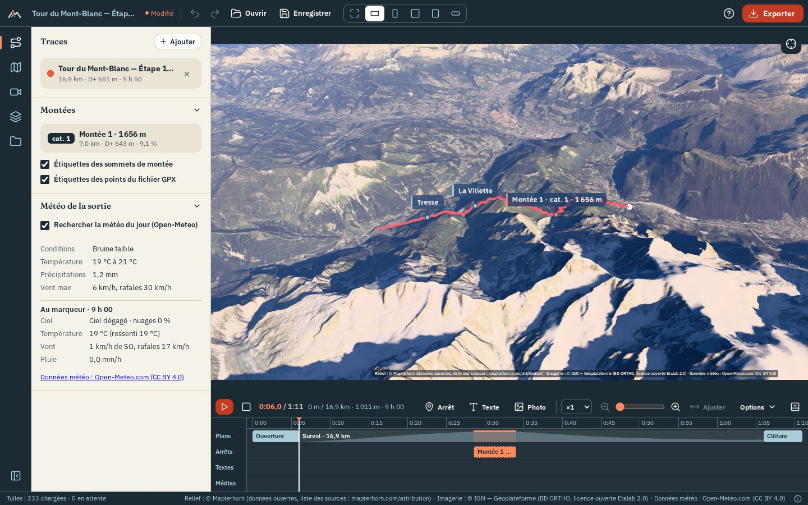
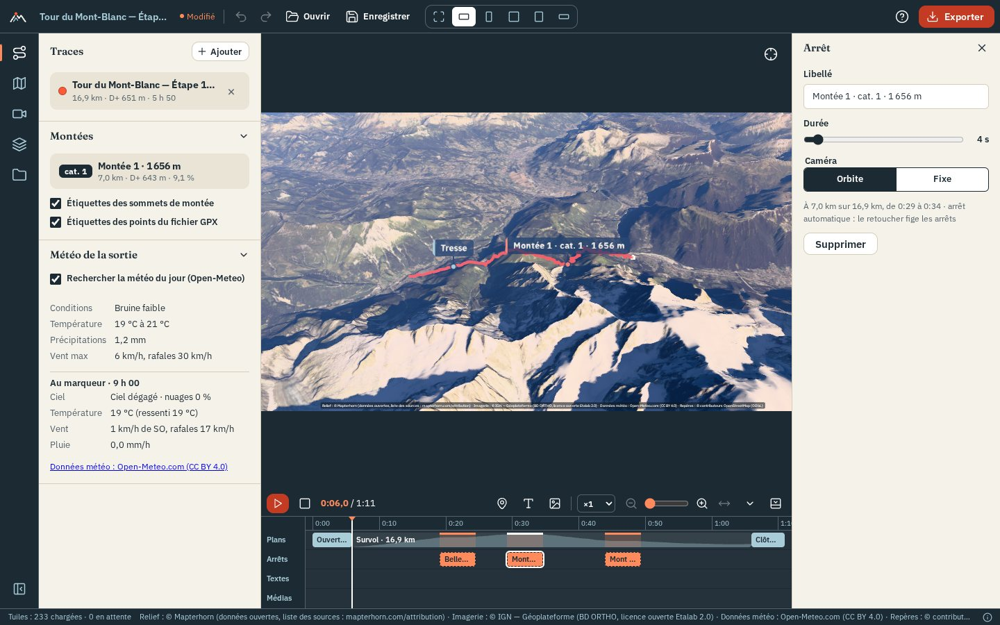
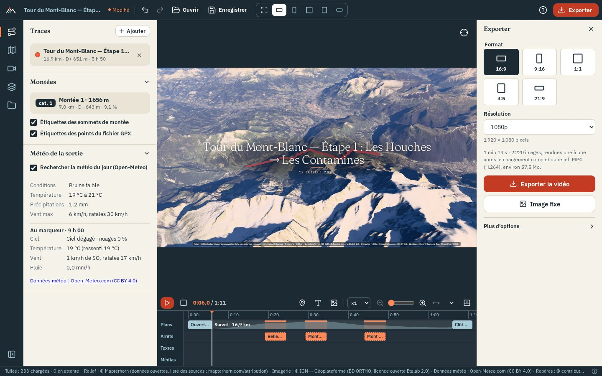

Before you start
OpenFlyover lays the track of an outing (hike, trail run, ride, ski tour…) on real 3D terrain covered with aerial photos, flies a camera along it, and saves the result as a video. Everything runs on your computer: there is no account and your track is never uploaded.
What you need
- A recent Chrome or Edge, or the desktop application. Video export has not been tested in Firefox or Safari.
- A decent graphics card: it sets the export speed.
- An Internet connection for the map tiles, unless you prepared the track for offline use.
Two ways to run it
- As a website, on your own machine or a web host (served over HTTPS).
- As a desktop application for Windows, macOS and Linux. It is the same app, with native file dialogs and batch rendering.
The interface is in French. This guide quotes its labels in French, with a translation in brackets the first time.
The screen

The screen reads like video editing software:
- Top bar: project name, undo / redo, "Ouvrir" (open), "Enregistrer" (save), the output format in the middle and "Exporter" (export) on the right. The ? button lists every keyboard shortcut.
- Left rail: eight labelled tabs, "Trace" (track), "Carte" (map), "Météo" (weather), "Lumière" (light), "Survol" (flyover), "Objectif" (lens), "Habillage" (overlay) and "Projet" (project). Click the active tab again, or press [, to fold the panel.
- Centre: the 3D view, framed exactly like the video. Below: the film timeline.
- Bottom: a thin status bar with the map state and the data sources (ⓘ shows the full credits). While the current view still waits for tiles, a small ring fills up next to "Carte · 72 %"; "Carte prête" (map ready) with a check means everything in view is loaded, so a preview from here runs without blurry patches. Tiles that could not be loaded show as "N tuiles en erreur" in yellow; they are retried automatically.
Messages (track imported, project saved, video ready…) appear at the bottom of the view; errors stay until you close them. The app remembers the open tab and whether the panel is folded.
Import a track
- Drop a file. Drag one or more
.gpxor.fitfiles anywhere into the window. On first launch you can also click "Choisir un fichier" (choose a file), or "Essayer avec l'exemple (Tour du Mont-Blanc)" to load a sample stage. - Let the view frame it. The camera frames the track. In France or Switzerland the imagery switches to IGN or swisstopo aerial photos, unless you already chose a source.
- Add more if needed. "+ Ajouter" (add) in the track list adds tracks: "Fichiers GPX ou FIT…" or "Activités Strava…". "Ouvrir" (Ctrl+O) accepts a track or a saved project.
Several tracks
The flyover, weather, landmarks and climbs follow the first track; the arrow on another track makes it the flown-over one, and its colour chip changes its colour. With two tracks or more, "Plusieurs traces" (several tracks) chooses how the film plays them:
- "La première" (the first one, default): the first track is flown, the others are only drawn;
- "À la suite" (one after the other): the film flies every track in the order of the list, each one a stage with its own colour, name and figures (the overlay counters, profile and mini-map are those of the stage). The timeline shows one segment per stage; a card gives the name, date, distance and D+ of each stage as it starts ("Carton au début de chaque étape"), and "Entre deux étapes" picks the cut: "Coupe" (cut), "Fondu au noir" (dip to black, default) or "Fondu au blanc". The up arrow on a track moves it one stage earlier. The weather, the sun and the clouds still follow the first track;
- "En parallèle" (side by side, the ghost race) replays them together: "Synchronisation" (same elapsed time, same clock time or same distance), "Caméra sur" (camera on) the first track, another track (it then becomes the first one), "Celle en tête" (the one ahead) or "Toutes les traces" (all of them in the frame), and "Classement à l'image" (leaderboard in the film, with the overlay on);
- "Enchaîner en un seul parcours" (chain into a single route) merges them in order of start time, for a multi-day outing or a recording split in two files. The message offers "Annuler" (undo). Unlike "À la suite", the tracks become one (one colour, one set of figures).
From Strava
"+ Ajouter" › "Activités Strava…" in the track list (or "Importer depuis Strava" on first launch) imports your activities. OpenFlyover ships no Strava key, so you create your own Strava application once:
- On strava.com/settings/api, create an application (free). In "Authorization Callback Domain", enter
localhost(local site or desktop app) or your site's address. - Paste its Client ID and Client Secret into OpenFlyover. They stay in this browser (or the desktop app) and are sent only to Strava.
- Click "Se connecter" (connect) and allow reading your activities.
- Tick the activities ("Plus" loads older ones), then "Importer".
Access is read-only but includes private activities and the full track, privacy zones included: keep it in mind before publishing a film. Strava allows 100 requests per 15 minutes and 1,000 per day per application. "Déconnecter" forgets the connection.
Plan an outing
You can fly over a route before doing it: import it like any track (a GPX prepared on Komoot, Visorando, IGNrando…).
Passing times and weather forecast
A track without times (usually one prepared on Komoot, Visorando…) has a "Prévoir la sortie" section: pick the date, start time, activity and pace, then "Calculer les horaires". The sun, counters and weather forecast (up to 16 days ahead) then follow the planned outing.
Look around and play
| Action | How |
|---|---|
| Rotate · pan · zoom | Left drag · right drag · mouse wheel |
| Back to the overview | Crosshair button at the top right of the view, or F |
| Play / pause | ▶ in the timeline, or Space; ■ returns to the start |
| Move in time | Click or drag the profile; ← → (1 s, 5 s with Shift), Home, End |
| Jump to a place | Click the track in the 3D view |
| Playback speed | ×0.5 to ×4 |
When paused, you can orbit freely around the marker.
Choose the look
Eight tabs, in the order you make a film: one tab, one question. Each groups its settings in short foldable sections. The two or three settings that matter stay open; every other one is a single row with its name and current value, like "Exposition · 0 IL ›": click or tap the row (or press Enter) to show its slider or buttons right below it, again to hide them. A value in bold differs from the default. Each feature is turned on or off with a switch; what is selected is shown in the trail-marker red. On a phone the tabs sit in a bar at the bottom that scrolls sideways.
| Tab | What you set there |
|---|---|
| "Trace" | Your tracks, "Plusieurs traces" (one after the other or side by side) |
| "Carte" | Base map (aerial photos, topographic maps, historical IGN photos) and water, relief exaggeration, track and marker with the track colouring (speed, slope, elevation, heart rate, cadence, power, temperature), climbs and terrain labels ("Montées et étiquettes"), OpenStreetMap landmarks ("Repères"), points of interest |
| "Météo" | Weather of the outing ("Météo de la sortie"), clouds ("Météo", "Manuel", "Mer de nuages"), rain, snow and mist in the picture and their intensity ("Pluie et brume") |
| "Lumière" | Atmosphere, shadows and exposure, the sun's time and date ("Soleil"), colour grading ("Couleurs") |
| "Survol" | Camera preset in "Caméra" › "Préréglage", a grid of tiles (icon, name, distance multiplier and tilt): "Poursuite", "Oiseau", "Orbite", "Cinéma", "Drone haut", "Satellite"; "Plus de préréglages" unfolds "Drone rapide", "Hélicoptère", "Planeur", "Montgolfière", "Avion" and "Vue du dessus" (the one you picked stays in the first grid), plus a "Personnalisé" tile, selected when your settings match no preset. Each preset implies a camera style (the motion: chase, sway, orbit, from above, cinematic), described under the tiles; to change it alone, the "Style" row of "Caméra". Film duration (15 s to 10 min), pacing at highlights, situation shots, the film's highlights and their stops ("Temps forts"). Camera smoothing sits in rows of "Caméra": "Lissage des virages" (metres of track, "Auto" by default), "Lissage de la visée" and "Lissage de la caméra" (seconds: the view eases into stops and speed changes and turns instead of jerking), "Fin en douceur" (the camera slows to a stop over the last seconds and watches the marker finish) |
| "Objectif" | Lens effects: motion blur, bloom, depth of field, and lens flare |
| "Habillage" | Overlay on the film: style ("Éditorial", "Diffusion", "Application"), colours and fonts, titles, counters, profile and mini-map, weather, logo and text, source credits |
| "Projet" | "Mes projets" (my projects), settings presets, offline preparation ("Hors ligne") |
Light
By default the sun is where it was at the time of the outing. In the "Lumière" tab, "Soleil" (it needs the "Atmosphère" switch above it): "Heure fixe" (fixed time) places it anywhere in the day, with one-click "Lever" (sunrise), "Matin", "Midi", "Heure dorée" (golden hour), "Coucher" (sunset) or "Nuit". The "Jour" row lights the scene on another date: the season changes the sun height.
Weather
The weather of the day (or the forecast for a planned outing) feeds the haze, the sun veil and the volumetric clouds. Clouds can also be set by hand, or turned into a "Mer de nuages": a flat sea of low clouds filling the valleys, its top set with "Sommet de la mer de nuages", the summits above it emerging. "Rendu de la mer de nuages" chooses between "Volumétrique" (clouds in volume, more costly) and "Nappe" (a lit surface of rolling cloud tops, without grain and lighter to compute). In the "Météo" tab the weather of the outing fits in two lines: the outing, then the moment at the marker.
Track and marker
"Trace et marqueur" ("Carte" tab) chooses a ball, a figurine (hiker, runner, cyclist, skier, paraglider…) or your photo in a circle. "Trace qui se dessine" draws only the part already covered; "Halo lumineux" adds a glow. "Lissage de la trace" averages the positions over a distance: use it when the track zigzags or the camera shakes.
Landmarks
"Repères" ("Carte" tab) lists the summits, passes, huts and lakes found along the track. Click one to move there; the eye button hides it from the view and the film (it stays listed, greyed out, to show it again). "Réafficher tous les repères masqués" brings them all back.
Colours
"Couleurs" grades the image in the preview and the export: "Naturel", "Lumineux", "Doux", "Contrasté", "Chaud du soir", "Froid d'altitude", "Noir et blanc"; one row each fine-tunes contrast, saturation, temperature and vignetting ("Lumière" tab).
Lens
The "Objectif" tab adds camera lens effects, all off ("Non") until you move their slider, the same in the preview and the export: "Flou de bougé (obturateur)" (speed effect: the edges of the picture streak towards the direction of travel while the centre stays sharp, stronger as the camera goes faster, none during stops; the export also renders 8 images per frame while the shutter is open, so it takes longer, and the preview adds a trail while the film plays), "Halo lumineux" (bloom on the sun, snow and water; its radius in the "Rayon du halo" row), "Reflet d'objectif" (a row) (lens flare when the sun is in the picture, with the atmosphere only) and "Profondeur de champ" (sharp on the marker, blurred in front and behind).
"modifié" and "Par défaut"
When a section differs from its defaults, a "modifié" (modified) chip appears next to its title. "Par défaut" resets the whole section; "Annuler" in the message, or Ctrl+Z, undoes the reset. The imagery source is not tracked: the import picks it by region.
Edit the film
On import, the film is assembled for you: an opening on the overview, the flyover with stops at summits, passes and climbs, and a closing. The timeline below the view lets you change all of it.

| To add | How | Then |
|---|---|---|
| Stop | "Arrêt" or S, at the marker | "Caméra pendant l'arrêt": same as the film, slow turn, wide view or fixed |
| Text | "Texte" or T, at the playhead | Position, duration, own colour and font ("Couleur et police") |
| Photo or video | "Média", or drop files on the timeline | Photos are placed where they were taken; videos (MP4, WebM, MOV, 50 MB max, added at 30 s at most and trimmable) keep their sound |
| Music | "Options" › "Ajouter une musique…", or drop the file (MP3, M4A, OGG, WAV, FLAC; 30 MB max) | Volume, fades, "Caler la durée du film sur la musique", "Caler sur le rythme" |
| Speed section | "Vitesse", or right-click the track › "Accélérer / ralentir ici" | ×0.25 to ×4; drag the block edges |
| Camera framing | "Garder ce cadrage ici" ("Survol" tab) | Distance, tilt and aim; the camera moves smoothly between framings |
Highlights at a glance
The "Temps forts" section of the "Survol" tab lists the film's highlights: the climb tops, passes and summits found along the track, then the stops you added, each with its km and elevation. Click a row to move the marker there. "Arrêt dans le film" adds or removes its stop, the field next to it sets its duration in seconds; × deletes a highlight you added. "Ajouter à la position du marqueur" adds one where the marker is. It is the same film as the timeline: what you change on one shows on the other.
"Arrêts automatiques" (also in the timeline's "Options") puts a stop at every highlight found. Your first change to a stop, here or on the timeline, freezes them: they stay as they are, the switch goes off. Switching it on again puts back a stop at every highlight and removes yours.
- Drag a block to move it, drag its edges to stretch it; edges snap to their neighbours. Del removes the selected block.
- The zoom slider and "Ajuster" (fit) set the timeline width; Ctrl + wheel zooms.
- Opening and closing: "Depuis la région" starts very high above the region and dives toward the track; "Balayage" (sweep) rotates the overview before descending. "Transition" chooses "Enchaîné" (continuous), "Coupe" (cut), or a fade to black or white.
- Quickest way to a situation shot: "Plan de situation à l'ouverture" (or "à la clôture") in the "Survol" tab › "Durée et rythme" sets the shot to "Depuis la région" with the region highlighted; off restores the default shot.
- With "Depuis la région", "Hauteur de départ" (start height) chooses "Région" or "Pays" (country), and "Mettre en avant la région" (highlight the region) frames the whole administrative region of the outing (canton, département…, from OpenStreetMap): the outside is darkened, the border glows, the name sits in the middle and an orange dot marks the outing, then it all fades out during the dive. Offline, or when no region contains the whole track, the shot simply has no highlight.
- Below, grouped: "Lieu" (place) picks another area that contains the whole track, smallest first: a national park, a protected area or regional natural park, an island, a mountain range, or another administrative level ("Automatique" keeps the administrative region). "Durées": "Maintien" (hold) keeps the region view still for a few seconds, then "Plongée" (push-in; "Remontée" at the closing) is the move; the shot lasts both. "Cadrage" (framing): "Hauteur de départ", "Distance" ("Auto" at the far left), "Inclinaison" (tilt from straight above), "Cap" "Libre" (the flight's side) or "Boussole" (north up, turned by "Orientation"), "Marge" (room above the place, in "Plus de réglages"), and "Capturer la vue actuelle" to take the tilt, distance and bearing of the 3D view as you left it. "Soleil": "Soleil" lights the shot: "Plein jour" (default) shows the region in daylight whatever the time of the outing, then the sun joins the flight's own light during the push-in; "Heure du survol" keeps the flight's light; "Accéléré" speeds two hours of daylight through the shot.
- A video filmed during the outing can be synced to the route: "Caler sur le parcours" places it where the marker passes at the time it was filmed. "Décalage de l'horloge" fixes a wrong camera clock; "Suivre la vitesse du survol" plays it at the marker's pace (it is then silent).
- "Baisser la musique sous les vidéos" lowers the music by 10 dB under videos with sound. The speaker button mutes playback only; the export keeps the sound.
- In the panel of a text or a photo, "Cadrer la caméra pendant cet élément" sets a framing for its duration.
- "Attaché à" (attached to), in the panel of a text, a photo or a video, links it to one of your stops: it then follows the stop when you move it, and becomes free again if the stop is removed. A text added with T while a stop is selected is attached to it straight away.
- While you drag a block near the left or right edge of the timeline, the timeline scrolls by itself. Folded sections of the panels stay folded the next time.
Output format
The icons in the middle of the top bar choose the format: 16:9, 9:16, 1:1, 4:5 or 21:9. The 3D view is framed exactly like the video: what you see is what you export. "Libre" (free) fills the whole screen for viewing and is not saved.
The dotted button below the crosshair (or G) shows the safe areas: the "Action 93 %" and "Titres 90 %" margins in landscape and square formats, and the parts hidden by the Reels, TikTok and Shorts interfaces in 9:16 and 4:5. They never appear in the export.
Export

A video
- Click "Exporter" (Ctrl+E): the export drawer opens on the right.
- Choose the resolution (720p to 4K). The "Images par seconde" (24, 30, 60) and "Qualité" rows set the rest.
- Read the summary: duration, frames, codec, estimated size. The video adds 1 s at the start and 2 s at the end.
- Click "Exporter la vidéo". In Chrome, Edge and the desktop app you first pick where to save: the file is written as the export progresses. Each frame waits for the visible terrain to load. The top button shows progress ("42 % · Annuler"); click it to stop.
- At the end the panel shows "Enregistrée dans…". In other browsers the file downloads at the end.
Keep the tab open during the export; tabs and format are locked. Without direct writing to disk, the video is built in memory (about twice its size); above an estimated 1.5 GB the panel warns you.
Other outputs
Still image
Move the playhead, then "Image fixe" (PNG, or JPEG in the "Type de l'image fixe" row). Same size as the video, overlay included.
Overlay only
"Habillage seul (fond transparent)" exports counters, profile, map, titles and credits on a transparent WebM, frame-aligned with the normal video, for your editing software (on Linux, the desktop app encodes it with ffmpeg too).
Several formats
"Plusieurs formats" exports several format × resolution pairs, plus the still image and poster if wanted, in one go ("Tout exporter"). Chrome, Edge and the desktop app write them into one folder. There, "Un film par trace" with "Choisir le dossier des traces…" makes the films for every GPX or FIT file of a folder.
Poster
"Affiche": A4 or A3 at 300 dpi, portrait or landscape, or square. Title, date, key figures, profile, weather, credits; several tracks each in its colour; "Carte à plat" for a map seen from above.
Work offline
"Hors ligne" ("Projet" tab) downloads the tiles of the track once; the view and the export then work without a connection.
- Choose the corridor width around the track: 2, 5 or 10 km. Outside it, the terrain stays coarser.
- Read the estimate (tiles and size: expect several hundred MB for 20 km).
- "Préparer hors ligne" starts the download, with "Pause", "Reprendre" (resume) and "Annuler". Running it again completes an unfinished pack.
The pack applies to the track, terrain source, imagery and level of detail chosen at that moment. "Supprimer" frees the space. Some sources cap the number of tiles downloaded per day (see data sources).
Save and reuse
- Name the project in the top bar (otherwise it takes the name of the first track). "Modifié" next to the name flags unsaved changes.
- "Enregistrer" (Ctrl+S) saves a
<name>.openflyover.jsonfile with the tracks, photos, videos, music and all settings. "Ouvrir" (Ctrl+O) reloads it; an invalid setting reverts to its default and a message says so. - "Garder dans Mes projets" ("Projet" tab) keeps the project inside the app: it saves itself, shows a small picture of the 3D view in the list and reopens in one click. Closing with unsaved changes asks first.
- Presets ("Projet" tab) save one family of settings under a name: map style, track and labels, overlay, or camera shot ("Prise de vue").
- Undo and redo cover every setting: Ctrl+Z, Ctrl+Shift+Z or Ctrl+Y. One slider drag is one step.
On a phone or tablet
The website installs like an app: it then opens full screen, without the browser bar, and starts without a connection (the tiles still need one, or an offline pack).
Install it
- Android (Chrome): menu ⋮ › "Installer l'application" (or "Ajouter à l'écran d'accueil").
- iPhone, iPad (Safari): "Partager" › "Sur l'écran d'accueil". The site reminds you once.
When a new version is online, "Nouvelle version disponible" appears: "Recharger" switches to it.
Send a track to the app
- Android, once installed: in Strava, Garmin Connect, Komoot or Files, share the GPX or FIT file ("Partager") and pick OpenFlyover. The app opens with the track imported.
- iPhone: iOS cannot share a file to a web app. Save the file to Files first ("Enregistrer dans Fichiers"), then "Choisir un fichier" in OpenFlyover.
Save a film on an iPhone
Without a save dialog (iPhone, iPad, older Android), the save buttons open the share sheet, "Partager / Enregistrer": "Enregistrer la vidéo" puts the film in Photos, "Enregistrer dans Fichiers" anywhere else. The same goes for the still image, the poster and the project file ("Enregistrer").
What changes on a phone
- The 3D view is lighter: sharper only when it stops moving, coarser clouds, "Nappe" for the sea of clouds, imagery up to "Fin".
- Films are exported up to 1080p on a phone (1440p on a tablet); a larger choice comes out at that size.
- Sound needs Safari 26 on iPhone and iPad; before that, the film is exported without sound and the result says so ("sans le son"). Firefox for Android cannot export a video: use Chrome. The still image works everywhere.
- Keep the screen on and the app in front during an export: a phone pauses a page in the background.
Layout and gestures
The web app adapts to small and touch screens (meant for Safari on iOS 16.4 and later and Chrome on Android); every button is at least 44 px high and fields do not zoom in when you type.
- Phone held upright: the 3D view stays at the top and the eight tabs form a bar at the bottom that scrolls sideways, the open one kept in sight. A tab opens its panel as a sheet from the bottom: drag its grip to a third, half or the full height, swipe it down to close it, or tap the open tab again. The export drawer and the settings of a timeline block open the same way, one sheet at a time.
- Top bar: the project name, "Exporter" and the "Plus d'actions" (⋯) menu with "Annuler" (undo), "Rétablir" (redo), "Ouvrir…" (open) and "Enregistrer" (save). The output format is chosen in the export drawer.
- Timeline: folded into a strip (play, time); "Déplier les pistes" opens it as a sheet over the view. Drag the blocks and the playhead with a finger, pinch with two fingers to zoom in and slide them to scroll.
- Phone held sideways: the tabs stay on the left and the panel opens beside them, over the view.
- Tablet: the tabs stay on the left, the panel and the export drawer open over the view, the timeline stays open below it.
| Gesture | In the 3D view |
|---|---|
| One finger | Turn around the scene |
| Two fingers | Pinch to zoom, slide to move |
| Tap on the track | Move the playhead there |
| Double tap | "Recadrer la vue" (reframe the view) |
| Long press | The menu of a right-click: "Ajouter un arrêt ici", "Ajouter un texte ici", "Point d'intérêt ici"… |
Tap an ⓘ to read its explanation; a long press on an icon button shows its name.
Desktop extras
The desktop application opens and saves through the system file dialogs, keeps offline packs and "Mes projets" in its own folder, and can render one film per track in a folder without any click:
openflyover --rendu ~/Traces/2026 --sortie ~/Films --prereglage "Montagne" --formats 16:9@1080p,9:16@1080p| Option | Meaning |
|---|---|
--rendu | Folder of GPX and FIT tracks (only files directly inside it) |
--sortie | Output folder, created if missing; the tracks folder by default |
--prereglage | A preset saved in the app; the app's current settings otherwise |
--formats | format@resolution, comma-separated (16:9, 9:16, 1:1, 4:5, 21:9; 720p, 1080p, 1440p, 4k) |
The window renders each track, writes rendu-en-lot.txt next to the films, then closes. Exit code 0: all done; 1: a film failed; 2: the command could not run.
On Linux the desktop app encodes video with the system ffmpeg (sudo apt install ffmpeg); without it, only still images can be exported.
Keyboard shortcuts
The same list is available in the app with ?.
| Keys | Action |
|---|---|
| Space | Play or pause |
| ← → | Back or forward one second; with a block selected, nudge it by one second (a tenth with Shift) |
| Shift+← Shift+→ | Back or forward five seconds |
| Home End | Start or end of the film |
| S · T | Add a stop at the marker · a text at the playhead |
| Del | Remove the selected block |
| Ctrl+Z · Ctrl+Shift+Z / Ctrl+Y | Undo · redo |
| Ctrl + wheel | Zoom the timeline |
| Ctrl+O · Ctrl+S · Ctrl+E | Open · save · export drawer |
| F · G | Reframe the view on the track · show the safe areas |
| [ | Fold or unfold the panel |
| ? | Show the shortcuts |
| Esc | Close the dialog, then the export drawer, then the selection |
Data, privacy and credits
- Your track never leaves your computer. Open services only see an approximate position: the tile area, a few points rounded to 1 km for the weather, the rectangle around the track for landmarks.
- Weather and landmarks are on by default; turn them off and no more requests are sent.
- Exported videos, images and posters carry the source credits in small print. If you turn them off ("Habillage" › "Crédits des sources"), credit the sources elsewhere, for example in the video description.
- Some sources forbid commercial use (EOX Sentinel-2, Open-Meteo) or require the same licence for derived works (OpenTopoMap). Check them before publishing a film commercially: see data sources.
Questions and answers
The export is slow. Is something wrong?
No. Each frame waits for the visible terrain to be fully loaded, then is rendered at the video size. A graphics card and a good connection (or an offline pack) make it faster. After a first film, the multi-format summary estimates the render time.
Import or export does nothing on my hosted site.
The site must be served over HTTPS: outside localhost, browsers reserve the video encoder and other features for secure pages.
Can I use Firefox or Safari?
The view works, but video export has not been tested there and long videos are built in memory. Use Chrome, Edge or the desktop app for exports.
Some terrain looks blurry or flat.
Detail loads around the camera as tiles arrive. During export each frame waits for them. Outside an offline corridor, terrain stays coarser when you are offline.
My video has no sound.
If the browser cannot encode audio, the video comes out silent and the export panel says so. Videos synced with "Suivre la vitesse du survol" are always silent.
Where are my presets and projects kept?
In the browser's storage (or the desktop app's own folder). To move a project to another machine, use "Enregistrer" and copy the .openflyover.json file.